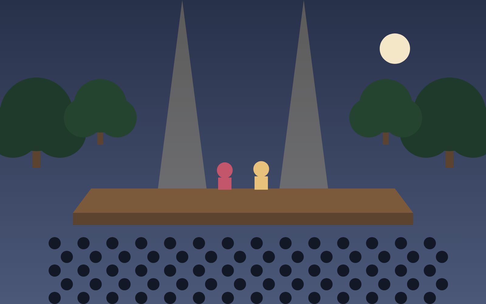
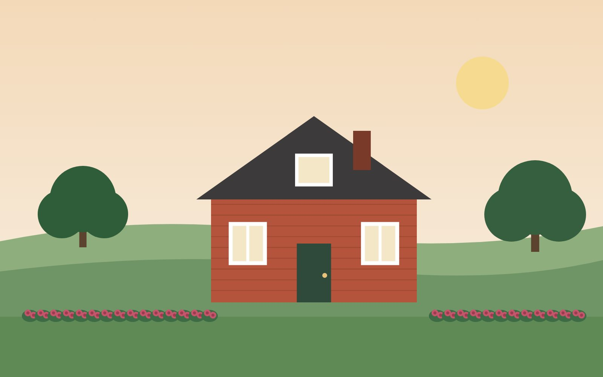
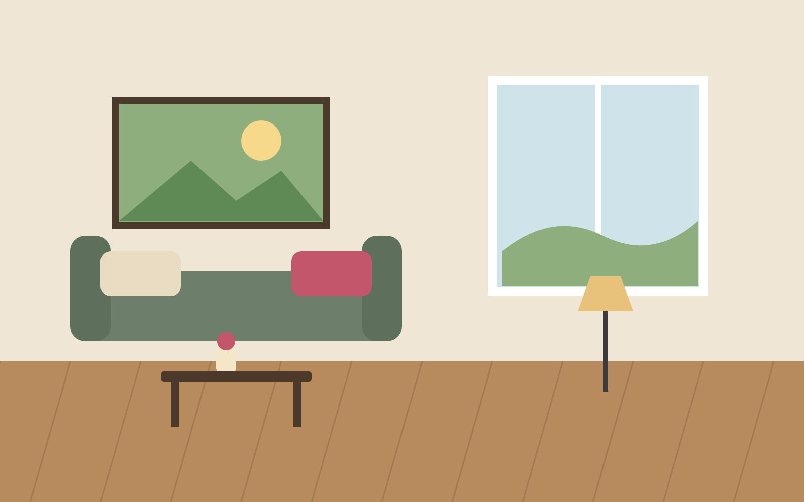
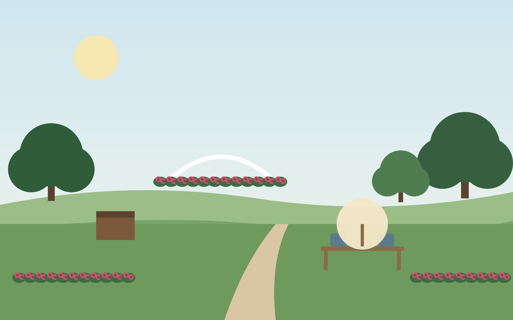
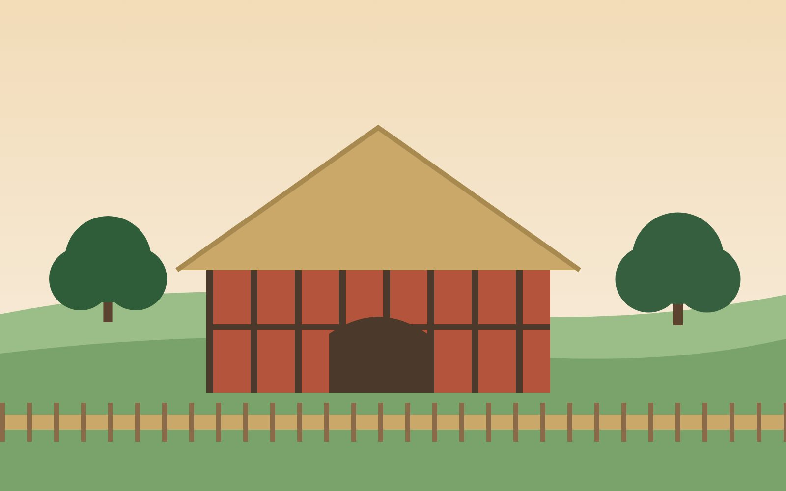
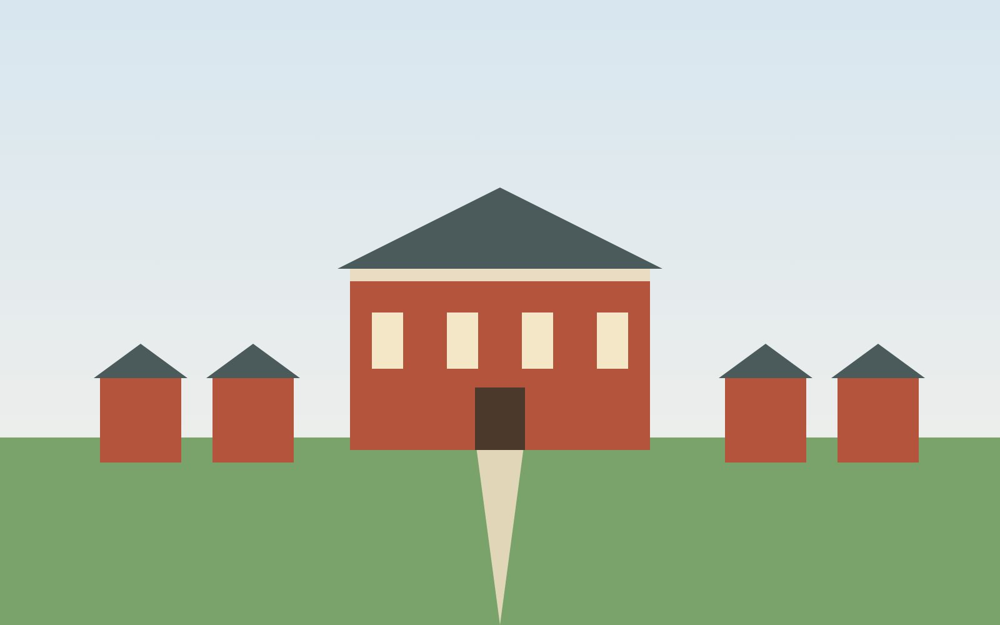
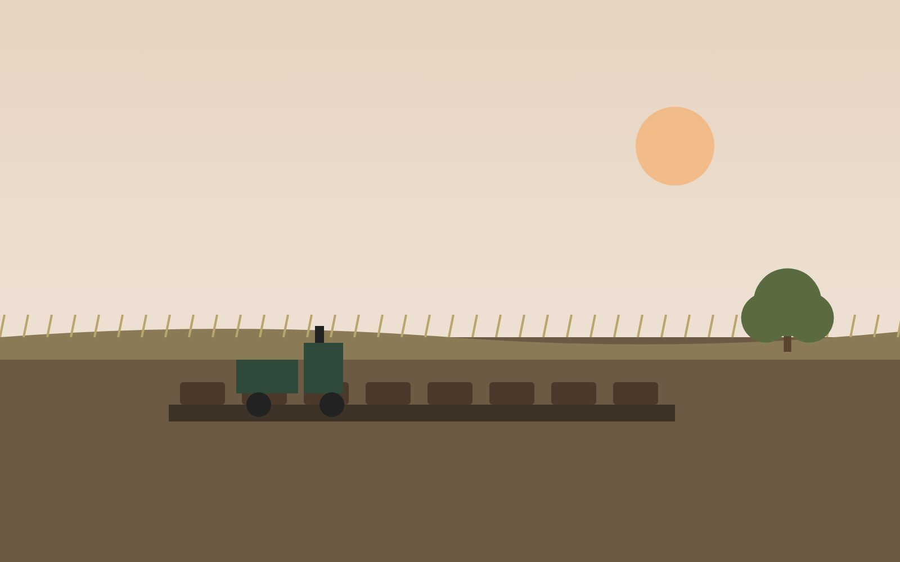
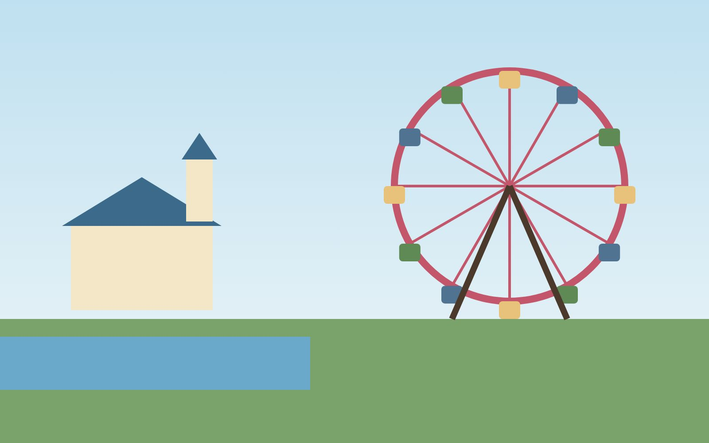
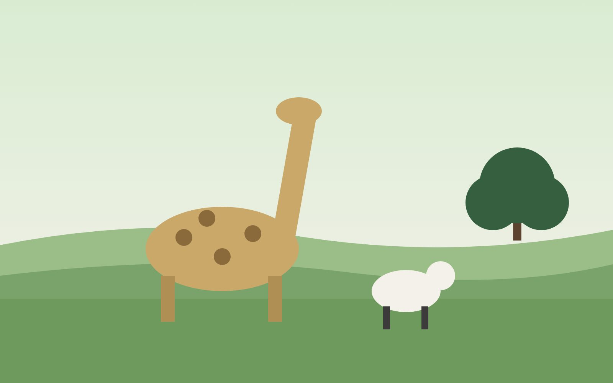
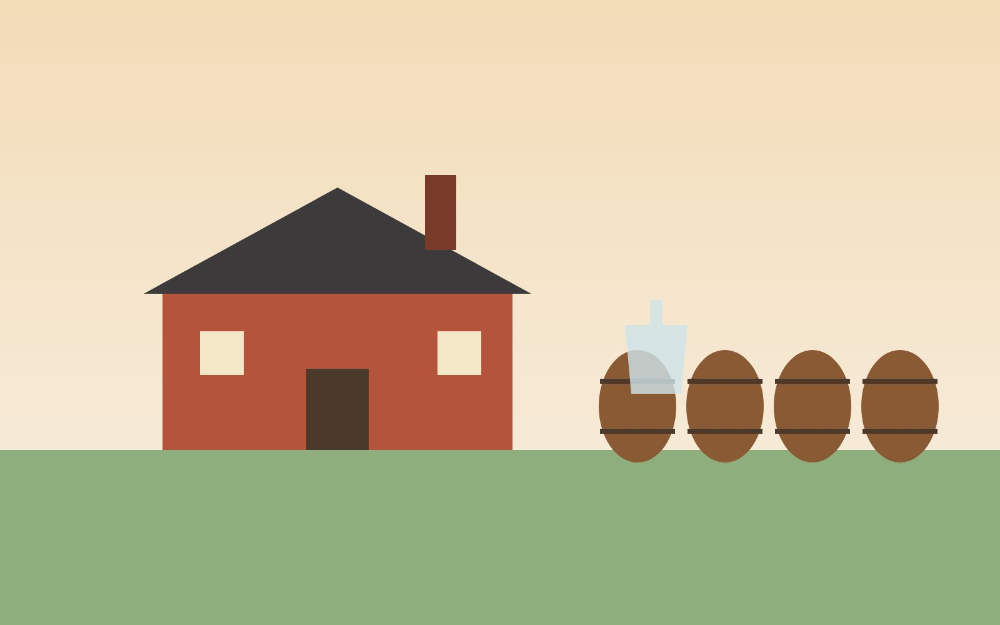

Im Ort · ca. 1 km
Waldbühne Ahmsen
Eine der größten Freilichtbühnen Norddeutschlands, direkt vor der Haustür. Im Sommer Musicals und Familienstücke unter freiem Himmel.
Saison: Mai bis September

Ferienhaus in 49774 Ahmsen · Emsland
Ein ruhiges Ferienhaus mit großem Garten am Rand des Hümmlings – und auf Wunsch liegen die Tickets für Ihre Ausflüge schon bereit, wenn Sie ankommen.
Platzhalterwerte – bitte an Ihr Haus anpassen.
Das Haus
Haus Rosenstock ist ein klassisches Emsländer Klinkerhaus, liebevoll eingerichtet und mit allem ausgestattet, was man für entspannte Tage braucht. Im Erdgeschoss liegen das helle Wohnzimmer mit Kaminofen und die offene Küche mit großem Esstisch. Oben warten die Schlafzimmer mit Blick ins Grüne.


Der Garten
Der Name kommt nicht von ungefähr: Von Juni bis September blühen im Garten rund um das Haus alte Rosensorten. Hinter dem Rosenbogen öffnet sich eine große Wiese mit Obstbäumen – Platz zum Spielen, Lesen und Sonnenuntergang-Schauen.
Ausflüge & Tickets
Nennen Sie uns bei Ihrer Anfrage einfach die Ausflüge, die Sie interessieren. Wir besorgen die Tickets für Sie und legen sie bei Ihrer Ankunft im Haus bereit – oder schicken sie Ihnen vorab digital zu. Die Ticketkosten rechnen wir zum Originalpreis mit Ihrem Aufenthalt ab.

Im Ort · ca. 1 km
Eine der größten Freilichtbühnen Norddeutschlands, direkt vor der Haustür. Im Sommer Musicals und Familienstücke unter freiem Himmel.
Saison: Mai bis September
Papenburg · ca. 55 km
Im Besucherzentrum schauen Sie beim Bau der großen Kreuzfahrtschiffe zu. Führungen nur mit festem Zeitfenster – frühzeitig buchen lohnt sich.
Ganzjährig, Zeitfenster-Tickets

Cloppenburg · ca. 45 km
Eines der ältesten Freilichtmuseen Deutschlands: historische Höfe, Mühlen und Handwerk aus mehreren Jahrhunderten.
Ganzjährig geöffnet

Sögel · ca. 20 km
Barockes Jagdschloss mit sternförmig angeordneten Pavillons, Emslandmuseum und weitläufigem Schlosspark.
Museum: Frühjahr bis Herbst

Geeste · ca. 35 km
Wie wurde aus dem Moor das Emsland? Ausstellung, historische Moorbahn und Lehrpfad durch die Moorlandschaft.
Frühjahr bis Herbst

Haren (Ems) · ca. 30 km
Großer Familien-Freizeitpark mit Wasserwelt, Spielhallen und See rund um ein Wasserschloss – ideal für Kinder.
Saisonal, Tagestickets

Friesoythe · ca. 50 km
Tierpark mit über hundert Tierarten und Fahrgeschäften – Tiere und Achterbahn an einem Tag.
Saison: Frühjahr bis Herbst

Haselünne · ca. 12 km
Haselünne ist die Kornbrennerstadt des Emslands. Auf dem historischen Brennereihof gibt es Führungen mit Verkostung (ab 18 Jahren).
Führungen nach Termin
Entfernungen sind ungefähre Fahrstrecken ab Ahmsen. Öffnungszeiten und Preise legen die Ausflugsziele fest – wir prüfen sie bei jeder Ticketbestellung.
So funktioniert's
Preise & Buchung
| Zeitraum | pro Nacht |
|---|---|
| Nebensaison (Nov.–März) | ab 95 € |
| Zwischensaison (April, Mai, Okt.) | ab 115 € |
| Hauptsaison (Juni–Sept.) | ab 135 € |
| Endreinigung (einmalig) | 80 € |
Mindestaufenthalt 3 Nächte, in der Hauptsaison 5 Nächte. Alle Preise sind Platzhalter – bitte anpassen.
Bitte nennen Sie uns in Ihrer Nachricht:
E-Mail: anfrage@haus-rosenstock.de
Telefon: 0000 / 000 000
Die Telefonnummer ist ein Platzhalter.
Anreise
Ahmsen liegt im Emsland zwischen Haselünne und Sögel, eingebettet in Wälder und Felder. Mit dem Auto erreichen Sie uns über die A31 (Abfahrt Meppen oder Haselünne). Der nächste Bahnhof ist Meppen; von dort holen wir Sie nach Absprache gerne ab. Die genaue Adresse erhalten Sie mit der Buchungsbestätigung.